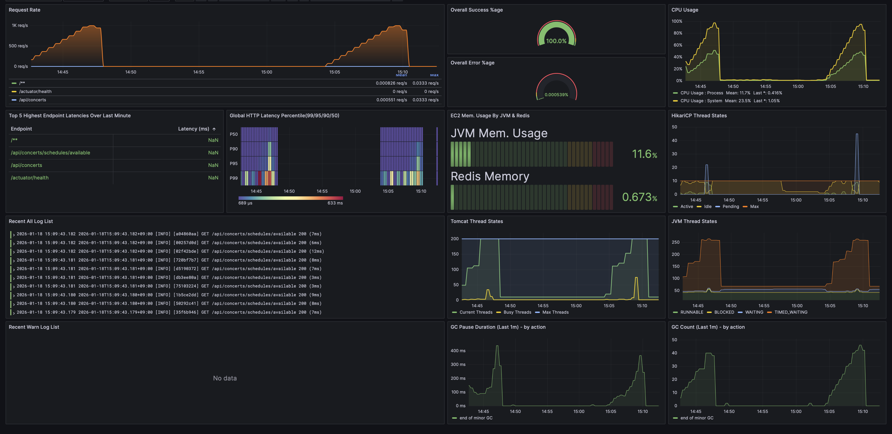

개인 프로젝트 · 2025.01 — 현재 Personal Project · Jan 2025 — Present
SLAM!
공연 좌석을 예약할 수 있는 기능을 제공하는 서비스입니다. 좌석 선점에 대한 동시성 제어가 요구되며, 선점한 좌석에 대한 결제는 충전된 포인트를 차감하는 것으로 실현됩니다. A concert seat reservation system with concurrency control for seat preemption. Payments are processed by deducting pre-charged points.
프로젝트 주요 성과 Key Achievements
−66%
P99 Latency
1.04s → 355ms
+53.3%
Throughput
813 → 1.25K RPS
−76%
요청당 DB 커맨드 DB Commands / Request
−64%
스토리지 절감 Storage Reduction
프로젝트 설계 주안점 Design Highlights

- 단일 서버 환경에서 도메인 분리의 이점은 취하되, 네트워크 오버헤드와 운영 복잡도를 줄이기 위해 모듈러 모놀리식 채택 Adopted modular monolith to gain domain separation benefits while reducing network overhead and operational complexity in a single-server environment
- 부하 테스트 및 운영 시 모니터링이 메인 서버 성능에 영향을 주지 않도록 별도 인스턴스로 분리 Separated monitoring into a dedicated instance to prevent load testing and observability from impacting the main server
- 도메인 간 직접 의존을 제거하고, 모듈 추가/변경 시 영향 범위를 최소화하기 위해 ApplicationEvent 기반 통신 적용 Adopted ApplicationEvent-based communication to eliminate direct cross-domain dependencies and minimize blast radius for module changes
주요 문제 해결 경험 Technical Challenges
P99 −66% 병목 진단 및 개선P99 −66% Bottleneck Analysis
JFR 스레드 덤프를 활용한 HikariCP 커넥션 대기열 원인 분석Resolving HikariCP bottleneck via JFR thread dump
API 멱등성 공통 모듈 설계API Idempotency Module Design
결제 중복을 막고 안전한 재시도를 보장하는 Cache & Lock 레이어 설계Cache & Lock layer design for safe retries
요청당 DB 커맨드 −76% 절감−76% DB Commands Reduction
MySQL General Log 분석을 통한 불필요한 트랜잭션 컨텍스트 식별 및 최적화Transaction context optimization via MySQL General Log analysis
TSID 마이그레이션 PoCTSID Migration PoC
InnoDB Page Utilization 측정을 통한 UUID v4 비효율성 실증 및 마이그레이션Proving UUID v4 inefficiency via Page Utilization
AI 도구 활용 단축기AI Productivity
AI 도구를 배포 안정성, 프로토타이핑 가속화에 활용한 사례Code review automation and fast prototyping with AI
관측 지표 및 알림 설계Observability System Design
SRE Golden Signals 기반 사전 개입 가능 알림 시스템 구축의 근거Providing actionable alerts based on SRE Golden Signals
01
애플리케이션 병목 식별, 원인 분석, 해결을 통한 P99 Latency 66% 개선 및 처리량 53.3% 향상 (P99 1.04s → 355ms | 813RPS → 1.25K RPS) P99 Latency −66% & Throughput +53.3% via Application Bottleneck Diagnosis and Resolution (P99 1.04s → 355ms | 813 → 1.25K RPS)
Grafana 관측 기반 진단 및 병목 원인 가설 수립 → JDK Flight Recorder (JFR) & 스레드 덤프 활용 세부 분석 통한 가설 검증 및 원인 분석 → 개선 Grafana-based observation and hypothesis formulation → JFR & thread dump analysis for validation → resolution
- 병목 관측: 동 기간 RPS 증가율 대비 비선형 급증 지표 식별
- 세부 분석: JFR & 스레드 덤프 활용 세부 분석 및 시계열 선후 관계 검증 → 고부하 상황에서 Memory Pressure로 인한 잦은 GC Pause 이후 스레드 적체 확인
- 해결방안: GC 주기 늘려 스레드 적체 발생 확률을 낮추는 것이 유효하다고 판단 → Allocation Rate 기반 적정 Heap 크기 재산출 후 확장 → 병목 해소 확인
- Bottleneck Observation: Identified non-linear metric spikes disproportionate to RPS increase rate over the same period
- Deep Analysis: JFR & thread dump analysis with time-series correlation → confirmed thread congestion following frequent GC pauses caused by Memory Pressure under high load
- Resolution: Determined that extending GC intervals to reduce thread congestion probability was effective → recalculated optimal Heap size based on Allocation Rate and expanded → bottleneck resolved
병목 구간 주요 지표별 수치 및 변화율 Key Metrics at Bottleneck Interval
| 지표Metric | 01:14:15 | 01:14:30 | 변화율Change |
|---|---|---|---|
| RPS | 798 | 813 | +1.87% |
| P99 Latency | 48.5 ms | 1.04 s | +2,044% |
| HikariCP Pending 스레드Threads | 0 | 189 | 신규 발생New |
| HikariCP Avg. Acq Time | 1.21 ms | 132 ms | +10,809% |
| GC Pause 지난 1분 합계Last 1m Total | 308 ms | 1.25 s | +305% |
| HikariCP Avg. Usg Time | 2.25 ms | 4.32 ms | 소폭 상승Slight rise |
| GC Count (1m) | 60회60 | 80회80 | +33% |
실험 환경 Test Environment
AWS c5.large (2 vCPU, 4GB RAM) · G1GC · HikariCP Max 10 · JVM Heap Xms 256MB, Xmx 512MB
문제 정의 Problem Definition
- 813 RPS 지점에서 Tail Latency 급증 및 스레드 적체 식별 → 병목 원인 파악 및 해결 가능성 검토 위해 분석 시작
- Tail latency spike and thread congestion identified at 813 RPS → initiated analysis to diagnose root cause and evaluate resolution options
해결 전략 Resolution Strategy
① 병목 원인에 대한 가설 수립 및 평가 ① Hypothesis Formulation and Evaluation
| 인과 가설Hypothesis | 검토 근거Evidence | 설명력Explanatory Power | 검증 우선순위Priority |
|---|---|---|---|
| A. STW Duration 증가Increase | GC 빈도 증가 & 분당 STW Pause 합계 증가 → 고부하 상황 시 병목 야기 가능Increased GC frequency & rising per-minute STW pause total → potential bottleneck under high load | 높음High | 1순위1 |
| B. CPU 포화Saturation | 문제 지점 System CPU 90% → CPU 경합으로 인한 병목 가능System CPU at 90% → possible CPU contention bottleneck | 중간Medium | 2순위2 |
| C. 커넥션 풀 부족Connection Pool Shortage | Little's Law 계산 상 1K RPS 처리 시 필요 커넥션 4.32개 < 현행 풀 최대 10개Little's Law: 4.32 connections needed at 1K RPS < pool max of 10 | 낮음Low | 3순위3 |
| D. DB 병목Bottleneck | 커넥션 Usage Time 평균이 일정 & Acquire Time만 증가 → 가능성이 낮다고 판단Stable avg usage time & only acquire time spiking → unlikely cause | 낮음Low | 4순위4 |
결론: Grafana 관측만으로는 가설 검증의 한계가 있음을 인지 → JVM 이벤트 시계열 분석을 통한 원인 파악 위해 JFR 프로파일링 수행 Conclusion: Recognized the limits of Grafana-only observation → conducted JFR profiling for JVM event time-series analysis
② JVM 프로파일링에 근거한 시간순 병목 발생 과정 분석 ② Chronological Bottleneck Progression Based on JVM Profiling
1. 높은 Allocation Rate 상황에서의 잦은 GC 포착 1. Frequent GC under High Allocation Rate
- 당시 Heap Free Ratio (21 %) 지점에서의 Heap Committed 확장 포착 → Memory Pressure 존재했음을 확인
- 객체 할당률 148MB/s 수준으로 증가 → GC 빈도 & 개별 GC 평균 STW 길이 증가 식별
- Identified Heap Committed expansion at Heap Free Ratio (21%) → Confirmed Memory Pressure
- Object allocation rate increased to 148MB/s → Identified increase in GC frequency & individual GC avg STW duration
2. HikariCP 커넥션 대기 스레드 적체 발견 2. HikariCP Connection Wait Thread Congestion
- 800 RPS 시점의 스레드 덤프 확인 결과, TransferQueue 내부에서 90개의 스레드가 Park 중임을 확인 → 내부 스레드 적체 상황
- Thread dump at 800 RPS revealed 90 threads parked in TransferQueue → internal thread congestion
3. 커넥션 풀 포화 및 스레드 적체로 인한 Connection Acquire Time 증가 → 지연 시간으로의 증폭 3. Connection Pool Saturation → Latency Amplification
- Acquire Time 평균 1.2 ms → 132 ms 급증 (+10,809 %) → 대기열 후순위 요청 지연의 누적/증폭되어 P99 Latency 1.04s로 귀결
- Acquire time surged from 1.2ms to 132ms (+10,809%) → cascading delays for queued requests pushed P99 Latency to 1.04s
③ 해결 방안에 관한 의사결정 : JVM Heap Xmx & Xms 2GB로 확장 ③ Resolution Decision: Expand JVM Heap Xmx & Xms to 2GB
- Heap Resize 선택 근거: Memory Pressure를 낮춰 GC 빈도를 줄이면 현재 처리량 저하의 원인인 커넥션 반환 지연의 해결 가능성이 높다고 판단
- Heap 크기 설정 근거: Over-provisioning을 통해 지표 변화 정도를 증폭 → 메모리 부족과 성능 저하 간의 인과관계를 명확히 확인하기 위함
- Heap Resize Rationale: Reducing memory pressure would lower GC frequency, resolving the connection return delays causing throughput degradation
- Heap Size Rationale: Over-provisioning to amplify metric changes — confirming the causal link between memory pressure and performance
해결 및 성과 Resolution & Results
| Before | After | |
|---|---|---|
| P99 Latency | 1.04 s | 355 ms (−68%) |
| HikariCP Pending | 189 | 0 (해결)(resolved) |
| 성능 포화점 (RPS)Saturation Point (RPS) | 813 RPS | 1.25K RPS (+53.3%) |
| 분당 GC 횟수GC / min | 60회60 | 8회Significantly reduced |
02
안전한 재시도를 보장하는 API 멱등성 공통 모듈 설계 API Idempotency Module Design for Safe Retries
캐시 · Redis Lock · DB 3개 레이어로 중복 예약 원천 차단 Defense-in-depth via Cache → Redis Lock → DB Unique Constraint
- Redis를 응답 캐시 계층으로 활용: 재시도 부하로부터 DB 보호
- Redis Lock & Lock-wait 없는 즉시 응답 전략: 요청 동시성 제어 및 불필요한 대기 리소스 제거
- 비즈니스 로직 커밋 완료 이후 Lock TTL 만료를 보상하기 위해 Redisson Watchdog 활용
- 응답 타입에 독립적인 Cache Entry 설계 → 도메인 독립적인 공통 모듈로서 활용 가능하도록 설계
- Redis as response cache layer: protecting DB from retry-induced load
- Redis Lock with instant response on lock-wait failure: concurrency control without unnecessary resource blocking
- Redisson Watchdog to compensate for Lock TTL expiry after business logic commit
- Type-independent Cache Entry design → enabling domain-agnostic reuse as a shared module

Fig 2. API 멱등성 보장 설계 Flow Diagram Fig 2. API Idempotency Design Flow Diagram
도입 배경 Background
- 예약 생성 / 결제 요청 API에 대한 중복 요청 제어 부재 → 동일 요청 유입 시 중복 예약 생성 문제 발생 가능
- Client-Server 간 상태 일관성 유지 방안 부재 → 네트워크 문제로 인한 중복 요청, 응답 수신 실패로 인한 상태 불일치 발생 시 복구 불가
- 위와 같은 문제가 여러 도메인에 존재하는 상태
- No duplicate request control for reservation/payment APIs → risk of duplicate bookings on identical request arrival
- No Client-Server state consistency mechanism → unrecoverable state mismatch on network-induced duplicates or failed response receipt
- These problems exist across multiple domains
결론: 안전한 재시도가 가능하도록 보장하는 멱등성 모듈 설계 필요 Conclusion: Need for an idempotency module that guarantees safe retries
문제 정의 Problem Definition
① Client-side: 서버가 '재시도'와 '새 요청'을 어떻게 구분할 것인가? ① Client-side: How does the server distinguish retries from new requests?
- 서버 입장에서 '재시도'와 '의도된 새 요청'을 구분할 수단이 없음
- Server has no means to distinguish between a retry and an intentionally new request
② Server-side: 중복 요청을 어떻게 처리할 것인가? ② Server-side: How to handle duplicate requests?
- 중복 요청 진입 시에도 원본과 동일한 응답을 일관적으로 제공해야 함
- 동일한 요청 다수가 동시 서버 진입 시 Race Condition 발생 가능 → 동시성 제어가 필요
- Redis 장애 또는 캐시 만료와 같은 예외적 상황에서도, 중복 데이터 생성이 원천 차단되어야 함
- Must consistently return the same response as the original even on duplicate entry
- Concurrent arrival of identical requests can cause race conditions → concurrency control required
- Duplicate data creation must be prevented even under Redis failure or cache expiry scenarios
③ 모듈 설계: 이 모듈의 책임 경계를 어디까지로 할 것인가? ③ Module Design: Where should this module's responsibility boundary end?
- 공통 모듈로서 특정 도메인의 응답 타입에 종속되지 않으려면 어떻게 설계할 것인가?
- 멱등성 보장과 데이터 정합성 보장을 하나의 모듈에 묶을 것인가, 분리할 것인가?
- How to design a shared module that is not coupled to any specific domain's response type?
- Should idempotency guarantees and data consistency guarantees be bundled or separated?
해결 전략 Resolution Strategy
① Client-side: Idempotency Key 기반 동일 요청 판별 ① Client-side: Request Identification via Idempotency Key
- 식별 기준: Client가 결제 페이지 진입 시점에 생성 및 할당하는 UUID v4 기반 Idempotency Key
- 생성 및 관리 전략: 결제 페이지 진입 시점에 생성 → React 컴포넌트 State에 저장 → 결제 완료 페이지 이동 시 Unmount와 함께 소멸
- Identification: UUID v4-based Idempotency Key generated and assigned at payment page entry
- Lifecycle: Created on page entry → stored in React component state → destroyed on Unmount when navigating to completion page
② Server-side: Redis 기반 상호 배제 동시성 제어 & Caching 설계 ② Server-side: Redis-based Mutual Exclusion & Caching Design
- 응답 Cache 관리 전략 수립: 적재 규모의 예측이 어려운 캐시 데이터 → 성능 안정성 고려해 JVM Heap이 아닌 Redis 저장 및 관리 선택
- 임계 영역 설정: Redis 캐시 데이터 또한 공유 자원에 포함이라는 점 & 불필요한 DB 부하 방지 필요 → Redis 개체도 임계 영역 활성
- 동시성 제어 설계: 요청 직렬화 및 임계 영역 진입 실패 시 재시도 모두 불필요 → 상호 배제 방식 채택
- 동시성 제어 구현: Redisson Lock API & Watchdog 활용 → Lock TTL 만료 시점과 비즈니스 로직 완료 시점 간 부조화로 인한 Race Condition 해결
- Cache Strategy: Unpredictable cache volume → chose Redis over JVM Heap for performance stability
- Critical Section: Redis cache data is also a shared resource & DB load must be minimized → Redis objects included in critical section
- Concurrency Design: Neither request serialization nor retry on lock failure needed → adopted mutual exclusion
- Implementation: Redisson Lock API & Watchdog → resolves race condition from Lock TTL expiry / business logic completion timing mismatch
③ 모듈 설계: 모듈 책임 경계 정의 & 공통 모듈 활용 고려한 설계 ③ Module Design: Responsibility Boundaries & Shared Module Architecture
- 책임 경계 정의: 모듈이 도메인 종속적이지 않아야 함 → 중복 실행 방지까지만 담당 & 최종 데이터 정합성 보장은 각 도메인에 위임
- Cache Entry 설계: 응답 객체 Type 독립성 고려해 ResponseEntity를 분해하여 상태코드·본문만 저장
- 모듈 구현 전략: 타입 독립적 캐시 설계를 위해 핸들러 메서드의 제네릭 리턴 타입 접근이 필수 → Spring AOP 기반 설계 선택
- Responsibility Boundary: Module must not be domain-specific → only handles duplicate execution prevention & delegates final data consistency to each domain
- Cache Entry Design: Decomposes ResponseEntity for type independence — stores only status code and body
- Implementation: Chose Spring AOP for implementation to access generic return types of handler methods
검증 및 결과 Verification & Results
- Testcontainer 환경 통합 테스트: 동일 Idempotency-Key 활용 10건 동시 요청 시 DB Insertion 1건 확인 & 202 Accepted 9건 확인
- 공통 모듈 활용 가능성 검증: 결제 요청 API & 예약 생성 API 적용 후 통합 테스트 수행 → 정상 작동 검증
- Testcontainer Integration Test: 10 concurrent requests with identical Idempotency-Key → confirmed 1 DB insertion & 9 × 202 Accepted
- Shared Module Validation: Applied to both Payment API & Reservation API → integration tests passed successfully
03
MySQL General Log 분석을 통한 요청 수 대비 DB 커맨드 과발행 원인 추적 및 해결 MySQL General Log Analysis: Diagnosing and Resolving Excessive DB Commands
요청당 DB 커맨드 76% 절감, 처리량 한계 82% 향상 (630 RPS → 1.15K RPS) DB commands per request reduced by 76%, throughput ceiling improved by 82% (630 → 1.15K RPS)
배경 Background
- 조회 API가 두 테이블 데이터를 조합하는 구조로 변경되며 N+1 조회 패턴 존재
- 처리량에 미치는 영향을 정량적으로 평가하기 위해 K6 Stress Test 실시
- Query API refactored to join data across two tables, introducing an N+1 query pattern
- Conducted K6 stress tests to quantify the throughput impact
관측 및 문제 식별 Observation & Problem Identification
- 처리량 하락: 시스템 처리량 한계 지점 50.4% 하락 (1.25K → 630 RPS)
- 의문 제기: 더미 데이터 5건 / 낮은 쿼리 복잡도 → N+1만으로는 해당 규모의 성능 회귀를 설명하기 어렵다고 판단
- Throughput Drop: 50.4% decline in throughput ceiling (1.25K → 630 RPS)
- Questioning: Small dataset (5 records) and low query complexity → N+1 alone couldn’t explain a regression of this magnitude
처리량 하락 원인 추적 Root Cause Investigation
- 가설 기각 (앱 포화): CPU 점유율, GC Pause 빈도/Duration 점검 → 컴퓨팅 자원 여유 확인
- 이상 패턴: 630 RPS 시점에 ~10K QPS 관측,
SET_OPTION이COMMIT의 2배 규모로 발생
- Hypothesis Ruled Out (App Saturation): CPU and GC metrics showed headroom
- Anomaly: At 630 RPS, observed ~10K QPS;
SET_OPTIONat 2× the volume ofCOMMIT
MySQL General Log 분석에 근거한 원인 규명 Root Cause via MySQL General Log Analysis
- 조사 대상: MySQL General Log를 통해 API 요청 1건 당 실제 발행되는 전체 DB 커맨드 전수 조사
- 현상 식별: 각각의 1개 SELECT 쿼리마다 2개의 상태 제어 커맨드(
SET SESSION...)가 동반 발생 (2배수 과발행 패턴) -
결론 도출:
Facade 메서드 내 명시적 트랜잭션 경계 부재 ➔ 단일 SELECT마다 별도 트랜잭션 컨텍스트 개별 생성 ➔ 불필요한 DB 커넥션 상태 제어 커맨드 과발행
- Investigation: Full audit of exact DB commands per request using MySQL General Log.
- Observation: Discovered each SELECT query was strictly accompanied by 2 connection
state control commands (
SET SESSION...), doubling counts. -
Conclusion:
Missing Explicit Transaction Boundary ➔ Separate Transaction Context for Each SELECT ➔ Excessive Connection State Commands Issued
해결 및 성과 Resolution & Results
-
컨텍스트 통합:
Facade 메서드에
@Transactional(readOnly = true)선언 ➔ 단일 트랜잭션 컨텍스트 통합으로 SET_OPTION 커맨드 낭비 제거 -
조회 효율화:
IN 절을 활용한 배치 타겟팅 결합 ➔ DB 네트워크 접근 횟수 및 라운드트립 대폭 저감
-
Context Consolidation:
Applied
@Transactional(readOnly = true)➔ Unified context resolved connection command overhead -
Query Optimization:
Implemented IN-clause Batch Queries ➔ Significantly Reduced DB Round-trips
Before
After
04
InnoDB Page Utilization 실측으로 확인한 UUID v4의 저장 구조 비효율: TSID 마이그레이션 UUID v4 Storage Inefficiency Measured via InnoDB Page Utilization: TSID Migration
클러스터드 인덱스 삽입 성능 41% 향상, 테이블 사이즈 64% 절감 Clustered index insert performance +41%, table size −64%
배경 및 문제 식별 Background & Problem Identification
- 문제 인지: UUID v4가 InnoDB Clustered Index에서 스토리지·I/O 비효율 유발 가능
- 대안 선정: 고유 ID 안정성 + 공간 효율성 + InnoDB 호환성 고려 → TSID 마이그레이션 계획
- Problem Identified: UUID v4 could cause storage and I/O inefficiency in InnoDB’s clustered index
- Alternative: Uniqueness + space efficiency + InnoDB compatibility → planned migration to TSID
PoC: Page Utilization 실측 비교 PoC: Page Utilization Measurement
10만 건 삽입 후 INFORMATION_SCHEMA.INNODB_BUFFER_PAGE 조회 → 실제 물리적 페이지 적재율 비교
검증.
Inserted 100K rows, then queried INFORMATION_SCHEMA.INNODB_BUFFER_PAGE to
compare actual physical page fill rates.
TSID 활용 시 91% Page Utilization 기록 → 높은 Buffer Pool 적재율에 근거한 Cache Hit Ratio 향상 기대 가능하다고 판단. TSID achieved 91% page utilization → expected improvement in Buffer Pool cache hit ratio due to higher page fill rates.
마이그레이션 성과 Migration Results
UUID v4
TSID
05
결제-예약 도메인 간 트랜잭션 일관성 보장을 위한 Orchestration Saga 설계 Cross-Domain Payment Consistency via Orchestration Saga
Payment · Point · Reservation 3개 도메인 조율, 부분 실패 시에도 Eventual Consistency 보장 Coordinating Payment · Point · Reservation domains with guaranteed eventual consistency under partial failures
- PaymentOrchestrator 기반 Orchestration Saga: 결제/환불 다단계 흐름의 중앙 조율
- Module API 계층 도입: 도메인 간 명시적 계약을 통한 경계 분리
- Compensation 패턴: 부분 실패 시 보상 트랜잭션 자동 실행 + CompensationTxLog 기반 지연 재시도
- Point 도메인 Exponential Backoff 재시도: 낙관적 락 충돌 등 일시적 실패 대응
- Append-Only Payment 모델: 상태 변경 시 새 레코드 생성, 완전한 감사 추적 보장
- PaymentOrchestrator-based Orchestration Saga: centralized coordination of multi-step payment/refund flows
- Module API layer: explicit inter-domain contracts enforcing clear boundary separation
- Compensation pattern: automatic compensating transactions on partial failure + CompensationTxLog-based deferred retry
- Point domain Exponential Backoff retry: handling transient failures from optimistic lock conflicts
- Append-Only Payment model: new record per state change, ensuring complete audit trail
도입 배경 Background
- 결제 처리 시 Payment · Point · Reservation 3개 도메인이 하나의 비즈니스 트랜잭션 내에서 조율되어야 함
- 결제 흐름: 포인트 차감 → 예약 확정 → 결제 기록
- 환불 흐름: 포인트 복원 → 예약 취소 → 환불 기록
- Payment processing requires coordination across Payment · Point · Reservation domains within a single business transaction
- Payment flow: Deduct points → Confirm reservation → Record payment
- Refund flow: Restore points → Cancel reservation → Record refund
문제 정의 Problem Definition
① 부분 실패 (Partial Failure) ① Partial Failure
- 다단계 흐름의 각 단계는 독립적으로 실패 가능
- 적절한 처리 없이는 불일치 상태 발생 (예: 포인트 차감 완료 but 예약 미확정)
- Each step in the multi-step flow can fail independently
- Without proper handling, system ends up inconsistent (e.g., points deducted but reservation not confirmed)
② 동기적 사용자 응답 요구 ② Synchronous User Response Requirement
- 결제는 사용자 대면 작업 → 요청 즉시 확정적인 성공/실패 결과를 기대
- 동일 요청-응답 사이클 내에서 결정적 결과를 반환할 수 있는 조율 메커니즘 필요
- Payment is user-facing → users expect deterministic success/failure immediately
- Coordination mechanism must return definitive result within the same request-response cycle
③ 도메인 간 강결합 ③ Tight Cross-Domain Coupling
- 기존: 도메인 간 서비스를 직접 호출 → 숨겨진 의존성 발생
- 실패 경계에 대한 추론 및 독립적 도메인 발전이 어려운 구조
- Prior design: domains called each other's services directly → hidden dependencies
- Difficult to reason about failure boundaries or evolve domains independently
④ 동시성 환경 하 일시적 실패 ④ Transient Failures Under Concurrency
- 포인트 잔액 연산은 낙관적 락(Optimistic Locking) 기반 → 동시 예약 시 일시적 충돌 발생 빈번
- Point balance operations use optimistic locking → prone to transient conflicts during concurrent reservations
해결 전략 Resolution Strategy
① Saga / Compensation 패턴 기반 결제 오케스트레이션 ① Saga / Compensation Pattern for Payment Orchestration
- PaymentOrchestrator: Orchestration 기반 Saga 패턴으로 결제/환불 다단계 흐름 조율
- 결제 흐름: PENDING 결제 생성 → 포인트 차감 → 예약 확정 → COMPLETED 처리
- 실패 시 보상: 예약 확정 실패 → 포인트 복원 보상 트랜잭션 실행 → FAILED 처리
- 보상 실패 안전망: 보상 트랜잭션 자체가 실패할 경우 CompensationTxLog에 영속화 → 60초 간격 스케줄러가 최대 3회 재시도
- PaymentOrchestrator: Orchestration-based saga coordinating multi-step payment/refund flows
- Payment flow: Create PENDING payment → Deduct points → Confirm reservation → Mark COMPLETED
- On failure — compensation: Reservation confirmation fails → Execute compensating transaction (restore points) → Mark FAILED
- Compensation safety net: If compensation itself fails, persist to CompensationTxLog → scheduler retries every 60s, up to 3 attempts
② Module API 계층: 도메인 간 통신 계약 ② Module API Layer: Inter-Domain Communication Contracts
- 인터페이스 정의: PointModuleApi, ReservationModuleApi — 각 도메인이 명시적 계약으로 기능 노출
- 결과 래핑: OperationResult 레코드로 성공/실패 상태 및 에러 코드 캡슐화
- Facade 구현: 내부 도메인 서비스에 위임 후 예외를 결과 객체로 변환
- 효과: 호출자(PaymentOrchestrator)는 인터페이스에만 의존 → 각 도메인 독립적 발전 가능
- Interface definition: PointModuleApi, ReservationModuleApi — each domain exposes public contract
- Result wrapping: OperationResult records encapsulating success/failure status and error codes
- Facade implementation: Delegates to internal services and translates exceptions into result objects
- Effect: Callers (PaymentOrchestrator) depend only on interface → domains evolve independently
③ Exponential Backoff 재시도 (Point 도메인) ③ Retry with Exponential Backoff (Point Domain)
- 적용 대상: PointModuleFacade — Spring @Retryable 활용
- 설정: 최대 3회 시도, 초기 지연 100ms, 배수 2.0 (100ms → 200ms → 400ms)
- 제외 예외: BusinessRuleViolationException, OptimisticLockingFailureException — 결정적 실패는 즉시 실패 결과 반환
- Target: PointModuleFacade — using Spring @Retryable
- Configuration: Max 3 attempts, initial delay 100ms, multiplier 2.0 (100ms → 200ms → 400ms)
- Excluded exceptions: BusinessRuleViolationException, OptimisticLockingFailureException — deterministic failures returned immediately via @Recover
④ Append-Only Payment 모델 ④ Append-Only Payment Model
- Setter 없음 — 상태 전이 시 withStatus()를 통해 새 인스턴스 생성
- 각 상태 변경이 새 레코드로 영속화 → 완전한 감사 추적(audit trail) 보존
- 상태 전이: PENDING → COMPLETED | FAILED | REFUNDED
- No setters — state transitions produce a new instance via withStatus()
- Each status change persisted as new record → complete audit trail preserved
- Status transitions: PENDING → COMPLETED | FAILED | REFUNDED
대안 비교 및 의사결정 Alternatives Considered
Choreography Saga (이벤트 기반) — 기각 Choreography-Based Saga (Event-Driven) — Rejected
- 각 도메인이 이벤트를 발행하고 반응하는 방식 — 중앙 조율자 없이 완전히 분리
- 기각 사유: 결제 처리는 동기적·결정적 응답 필수 → 이벤트 전파 기반으로는 동일 요청-응답 사이클 내 확정 결과 반환 불가
- Each domain publishes and reacts to events — fully decoupled, no central coordinator
- Rejected because: Payment requires synchronous, deterministic response → event propagation cannot return definitive result within same request-response cycle
서비스 직접 호출 (API 계층 미적용) — 기각 Direct Service-to-Service Calls (No API Layer) — Rejected
- 구현 단순 — 대상 도메인의 서비스를 직접 주입하여 호출
- 기각 사유: 숨겨진 도메인 간 의존성 발생, 실패 처리 일관성 저하, 향후 분산 아키텍처 전환 시 복잡성 증가
- Simpler to implement — directly inject and call target domain's service
- Rejected because: Creates hidden cross-domain dependencies, inconsistent failure handling, and complicates future migration to distributed architecture
재시도 없는 즉시 실패 (Fail-Fast) — 기각 Fail-Fast Without Retry — Rejected
- 추론이 단순 — 모든 실패를 즉시 호출자에게 전파
- 기각 사유: 동시 예약 환경에서 낙관적 락 충돌은 예상되는 일시적 실패 → 짧은 Exponential Backoff로 성공률 유의미하게 개선 가능
- Simpler to reason about — every failure surfaced immediately to caller
- Rejected because: Optimistic lock conflicts under concurrent reservations are expected transient failures → brief exponential backoff significantly improves success rates
결과 및 Trade-off Consequences & Trade-offs
✓ 긍정적 결과 ✓ Positive Outcomes
- 명확한 도메인 경계: Module API 인터페이스가 명시적 계약으로 기능, 도메인 간 의존성 가시화 및 감사 가능
- 장애 허용 결제 흐름: 보상 패턴이 부분 실패로부터 자동 복구, 스케줄러 재시도가 안전망 역할
- 감사 추적: Append-Only 결제 레코드가 상태 전이의 완전한 이력 제공
- 재시도 복원력: 포인트 연산이 일시적 동시성 충돌을 사용자에게 전파하지 않고 우아하게 처리
- Clear domain boundaries: Module API interfaces serve as explicit contracts — cross-domain dependencies visible and auditable
- Fault-tolerant payment flows: Compensation pattern ensures automatic recovery from partial failures, with scheduled retry as safety net
- Audit trail: Append-only payment records provide complete state transition history
- Retry resilience: Point operations gracefully handle transient concurrency conflicts without propagating failures to users
△ Trade-off △ Trade-offs
- Eventual Consistency: 보상이 CompensationTxLog로 지연될 경우, 재시도 사이클당 최대 60초간 일시적 불일치 상태 (최대 3회)
- 운영 오버헤드: CompensationTxRetryScheduler 및 CompensationTxLog 테이블에 대한 모니터링 필요 — 재시도 소진 시 수동 개입 필요
- 비대칭 재시도: PointModuleFacade만 재시도 로직 구현 — Reservation 단계의 일시적 실패는 보상 경로 진입
- Eventual Consistency: When compensation is deferred to CompensationTxLog, system is temporarily inconsistent (up to 60s per retry cycle, max 3 attempts)
- Operational overhead: CompensationTxRetryScheduler and CompensationTxLog table require monitoring — manual intervention needed when retries are exhausted
- Asymmetric retry: Only PointModuleFacade implements retry — transient failure at reservation step triggers compensation path rather than in-place retry
06
AI 도구 활용을 통한 개발 생산성 및 품질 향상 Development Productivity & Quality via AI Tools
- CodeRabbit 기반 PR 코드 리뷰 자동화 → 배포 안정성 제고
- 시연용 Frontend 프로토타이핑: 요구사항 문서화 → Google Antigravity + Claude Code 교차 활용 → 속도와 코드 품질 동시 확보
- Automated PR code reviews via CodeRabbit → improved deployment stability
- Frontend prototyping: documented requirements → cross-leveraged Google Antigravity + Claude Code for both speed and quality
07
운영 환경에서의 빠른 장애 대응을 위한 모니터링 및 알림 체계 구축 Monitoring & Alert System Build for Rapid Incident Response in Production
서버 상태를 빠르게 판단하기 위해, 어떤 지표를 왜 관측해야 하는지 정의하고 임계치 설정의 근거를 수립한 의사결정 과정 Defining what to observe and why — establishing the rationale behind metric selection and alert thresholds for rapid server health assessment
- Google SRE Golden Signals 참고하여 Latency, Traffic, Errors, Saturation을 표현할 수 있는 관측 지표 선별
- 특히 Saturation의 경우, JVM 성능 최적화 경험에 근거하여 시스템 & 애플리케이션 포화도 판단에 필요한 지표를 선택
- 부하 테스트시의 시스템 반응 및 도메인 특성을 고려한 Alert Rule 설정 → 반복 검증 통해 False Alarm 발생을 고려해 알림 임계치 최적 설정
- Selected observability metrics representing Latency, Traffic, Errors, and Saturation based on Google SRE Golden Signals
- For Saturation specifically, chose metrics necessary to assess system & application saturation based on JVM optimization experience
- Configured Alert Rules considering system response during load testing and domain characteristics → optimized thresholds through iterative validation to account for False Alarms

Fig. 5 Grafana로 구축한 서비스 메트릭 대시보드 Fig. 5 Service metric dashboard built with Grafana
도입 배경 Background
- 모니터링 & 알림 부재 → 처리량 임계 도달에 따른 Server Hang 발생 시 사전 대응 및 조치 불가
- 트래픽 패턴 및 규모 변화에 대응하는 서버 및 애플리케이션 상태 관측 불가 → 처리량 개선을 위한 병목 진단 근거 파악 불가
- Absence of monitoring & alerts → unable to proactively respond or intervene when Server Hang occurs upon reaching throughput limits
- Inability to observe server/application state in response to traffic pattern/volume changes → unable to gather evidence for bottleneck diagnosis to improve throughput
결론: 병목 진단 및 운영 환경에서의 이슈 조기 대응을 위한 관측 & 알림 체계 필요 Conclusion: Need for observation & alert systems for bottleneck diagnosis and early issue response in production
문제 정의 Problem Definition
① 관측 지표 설정 문제 : 무엇을 관측해야하는가? ① Metric Selection Problem: What should we observe?
- 시스템 & 애플리케이션의 처리량 포화 지점 판단을 위한 정보가 필요.
- 병목에 기여할 수 있는 요인이 무엇인지 식별하고 이를 표현하는 정보를 수집 및 시각화해야함
- Need information to determine the throughput saturation points of the system and application.
- Must identify contributing factors to bottlenecks and collect/visualize information representing them.
② 알림 규칙 설정 문제 : 무엇을, 언제 알아야하는가? ② Alert Rule Configuration Problem: What and when do we need to know?
- '문제'가 아닌 '문제 징후'를 알려야 함 → 알림을 통해 선제 대응이 가능해야 서버 안정성 유지를 위한 조치가 가능하기 때문.
- 너무 잦은 알림은 대응 효율을 떨어뜨림 → 적절한 알림 빈도 및 수준이 유지되어야 함
- Must alert on 'symptoms of problems' rather than just 'problems' → proactive response via alerts is necessary to take action for maintaining server stability.
- Too frequent alerts degrade response efficiency → appropriate alert frequency and levels must be maintained.
해결 전략 Resolution Strategy
① 관측 지표 설정 문제: SRE Golden Signals & 운영 문제 대응 경험에 근거하여 수집 지표 선택 ① Metric Selection Problem: Selected collected metrics based on SRE Golden Signals & operational incident response experience
1) Traffic & Errors : HTTP 엔드포인트별 RPS 및 5xx 에러율, WARN 레벨 이상 로그 수집
2) Latency : P99, 95, 90, P50 Latency 지표 수집 → 구간 별 Latency 차이 및 변화 패턴 관측을 통해 앱 내 병목 유무 & GC 영향 관측 가능
3) Saturation : CPU Throttling 으로 인한 처리량 저하와 애플리케이션 처리량 한계를 혼동한 경험 있음 → 시스템 / 애플리케이션 포화 구분 식별 필요.
- 시스템 포화 진단 지표 : CPU / Memory Usage (%)
- 애플리케이션 포화 진단 지표 : Tomcat & JVM Thread Pool, CPU Process Usage (%), HikariCP Pool & Connection Usage/Acquire Time
1) Traffic & Errors : HTTP endpoint RPS, 5xx error rates, and WARN+ level log collection
2) Latency : P99, 95, 90, P50 Latency metric collection → possible to observe app-internal bottlenecks & GC impacts by observing latency differences/patterns across percentiles
3) Saturation : Past experience confusing throughput degradation from CPU Throttling with application throughput limits → need to separately identify system vs. application saturation.
- System saturation metrics : CPU / Memory Usage (%)
- Application saturation metrics : Tomcat & JVM Thread Pool, CPU Process Usage (%), HikariCP Pool & Connection Usage/Acquire Time
② 알림 규칙 설정 문제: 선제 대응을 위한 Alert Rule 설정 & 반복 실험을 통한 Alert Rule 최적화 ② Alert Rule Configuration Problem: Alert Rule setup for proactive response & Alert Rule optimization via iterative testing
- 반복 실험을 통한 포화 & 임계지점 식별 : 다양한 규모의 트래픽을 Peak, Steady 와 같이 여러 패턴으로 흘려보내며 포화/임계 지점에서의 패턴 식별
- 수치 & 지속시간 모두에 근거한 Alert Rule 설정 : 수치 기반 임계 설정 시의 Alarm 이 유용하지 않았음 → 지속 시간과 함께 했을 때 유의미함을 학습함
- Alert Rule 설정 & 평가 반복을 통한 최적화 : 반복적으로 부하 테스트와 발생한 알림의 유효성 평가 수행 → 필요한 정보에 관한 판단 기준 및 알림 최적화
- Identifying saturation & threshold points via iterative testing: sending various traffic volumes in patterns like Peak and Steady to identify patterns at saturation points
- Alert Rule setup based on both value & duration: isolated value-based alarms were not useful → learned that combining value with duration provides meaningful signals
- Optimization through iterative Alert Rule setup & evaluation: repeatedly conducted load tests and evaluated the validity of triggered alerts → optimized judgment criteria and alerts for necessary information
| 지표Metric | Alert RuleAlert Rule | 설정 근거Rationale |
|---|---|---|
| P99 Latency | 1s 이상 / 30s 유지 | P99 폭증이 30초 이상 유지 → 앱 내 대기열 형성 가능성을 시사함 P99 spike sustained >30s → signifies potential queue formation within the app |
| GC Duration (1분 합계) | 5s 이상 / 30s 유지 | Atlassian 에 의하면 GC Overhead 10% 부터 주의 → 이보다 조금 이르게 설정 Per Atlassian, GC Overhead >10% implies caution → configured slightly earlier than this |
| HikariCP Pending | Pending 스레드 수 > 0 / 30초 유지 | DB 커넥션 대기열이 30초 이상 해소되지 않음 → 본격적 병목 발생 시작 징후 DB connection queue unresolved for >30s → symptom of imminent serious bottlenecks |
| CPU Usage (System) | 사용률 > 85% / 1분 유지 | 100% 도달 시 Server Hang → 85% 시점에 개입하여 사전 대응 위한 시간 확보 Reaching 100% causes Server Hang → intervening at 85% secures time for proactive response |
| JVM Memory Usage | Heap Usage > 80% / 1분 유지 | 80% 1분 유지 시 GC 로 회수되지 않는 메모리 누수 발생 가능성 시사 Sustained at 80% for 1m implies potential memory leak unrecoverable by GC |
성과 및 효용성 검증 Effectiveness Verification
- Grafana 대시보드 활용해 Infra, JVM 수준 병목 진단 → 인프라 증설 없이 도입 전 대비 처리량 84% 개선 (813 RPS → 1.5K RPS)
- 서버 포화 및 임계 이전 조치가 가능해짐 → JFR 활용한 프로파일링 수행 도중, Hang 발생 전 임계 도달 알림 확인하여 프로파일링 내용 유실 방지
- Diagnosed Infra and JVM-level bottlenecks utilizing Grafana dashboard → improved throughput by 84% compared to pre-implementation without infra expansion (813 RPS → 1.5K RPS)
- Allowed actions prior to server saturation and thresholds → during JFR profiling, confirmed threshold alert before Hang occurred, preventing loss of profiling data